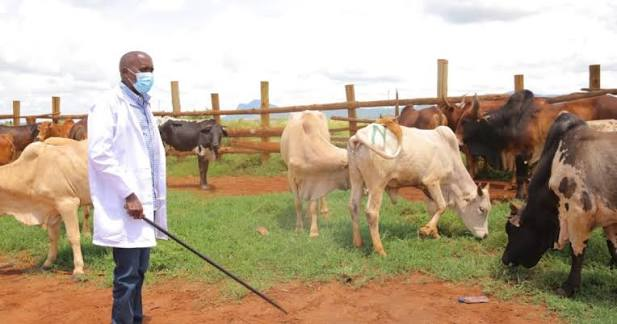

Our Departments
The County Government of Kajiado has different departments responsible for planning, coordinating and delivering services to residents.

Agriculture, Livestock and Fisheries
Supports farmers and livestock keepers through agricultural extension, veterinary services and livestock development programmes.

Health Services
Coordinates healthcare facilities, public health programmes, disease prevention and medical services.
Water, Environment and Natural Resources
Promotes access to clean water, environmental conservation and responsible management of natural resources.
Roads, Transport and Public Works
Oversees county road maintenance, transport infrastructure and public works projects.
Trade, Tourism and Cooperatives
Promotes business development, tourism, investment opportunities and cooperative societies.
Education, Youth, Sports and Social Services
Supports early childhood development, youth empowerment, sports and social welfare programmes.
Finance and Economic Planning
Manages county finances, budgeting, revenue collection and economic planning.
Lands, Housing and Physical Planning
Coordinates physical planning, land management, housing programmes and development control.